Утренние мастер-классы Кундалини йоги
Крии, разработанные специально для женщин. Тело, дыхание, концентрация — в одном комплексе.
Вардане · Сочи · 9—12 октября 2026
Женский ретрит по Кундалини йоге
с Атма Бани Каур
Четыре дня у моря, чтобы успокоить ум, вернуть телу лёгкость и сформировать намерение на новый цикл. Начинаем в новолуние.
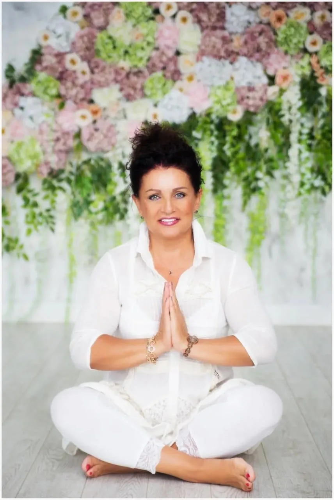
01 · Для кого
Новолуние — начало цикла. В эти дни легче отпустить старое и решить не только что вы хотите, но и какой хотите себя чувствовать.
Если узнаёте себя хотя бы в двух пунктах
Голова не выключается даже на отдыхе: списки, тревога, «а что если».
Тело устало: спина, зажимы, утро без бодрости.
Хочется перемен, но непонятно, с чего начать.
Давно не было четырёх дней только для себя.
Цель ретрита — красота на трёх уровнях: ментальном, физическом и духовном. Не «всё и сразу», а конкретные практики, которые вы увезёте домой и сможете повторять сами.
02 · Ведущая ретрита
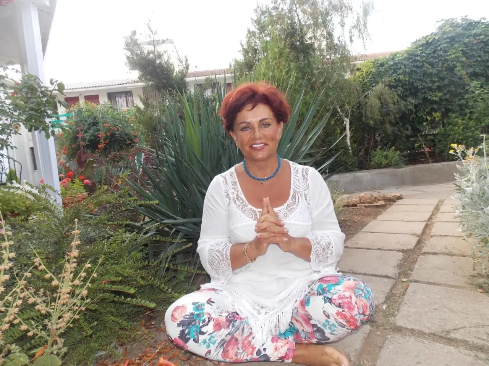
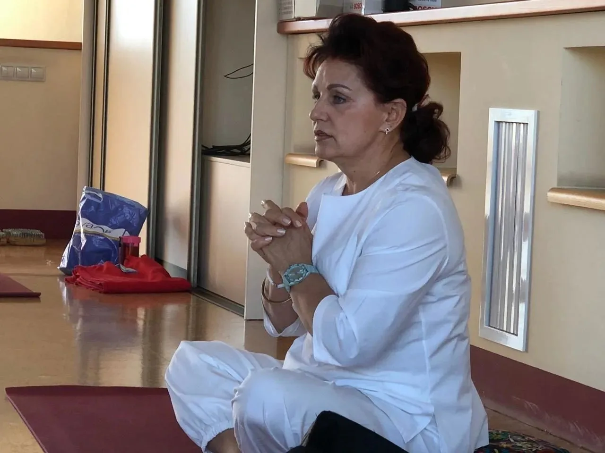
Сертифицированный преподаватель Кундалини йоги международного уровня, школа Амрит Нам Саровар (Франция). Прошла все три уровня обучения у йога-профессора Карты Сингха; третий — в его ашраме Ле Мартине во французских Альпах.
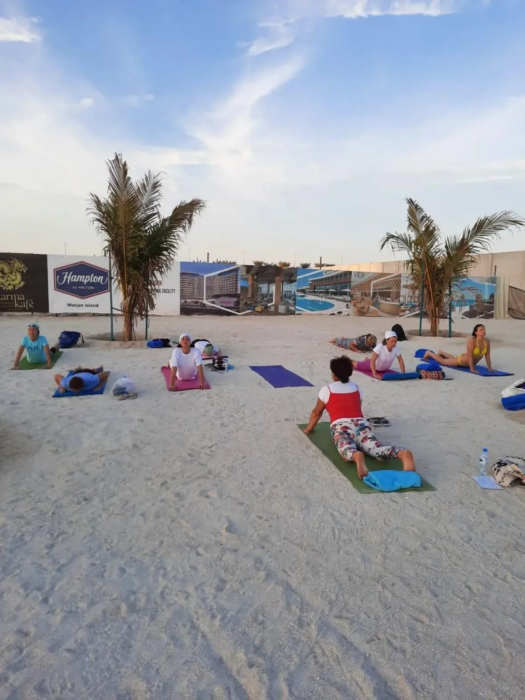
Галечный берег в семи минутах
Утренние практики выносим на берег, когда позволяет погода.
03 · Программа
Восемь практик, которые складываются в один день и повторяются с вариациями. Все можно освоить с нуля.
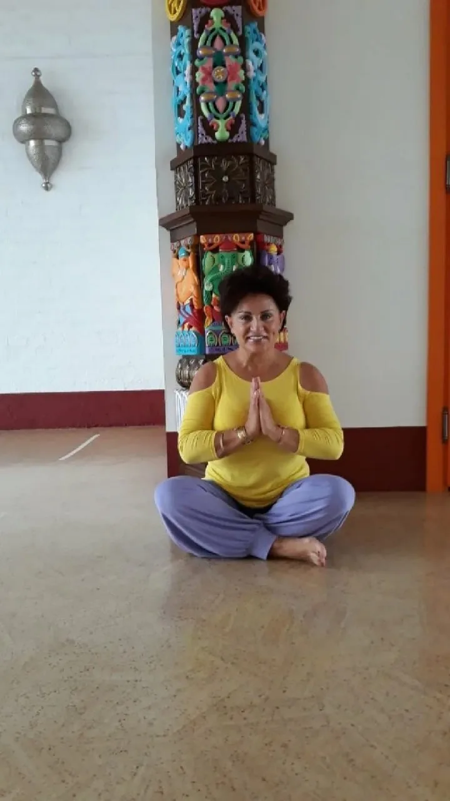
Крии, разработанные специально для женщин. Тело, дыхание, концентрация — в одном комплексе.
Дыхательные техники для успокоения ума и наполнения энергией. Осваиваются с нуля.
Комплекс на гибкость позвоночника и общий тонус — практика, которую связывают с сохранением молодости.
Мудры: мелкая моторика как тренировка для мозга. Простые упражнения, которые можно делать где угодно.
Баланс тела, ума и души в конце дня — короткие практики перед сном.
Звуковая практика глубокого расслабления — многие сравнивают её с эффектом полноценного дневного сна.
Мягкая телесная практика: точность, безопасность, расслабление.
Разговор о намерении, ресурсе и о том, что мешает его удерживать. Цикл на четыре вечера.
Примерное расписание дня, может меняться по состоянию группы и решению ведущей.
Основной мастер-класс дня: крия, дыхание, короткая медитация. После — завтрак.
Тибетская йога, мудры, дыхательные техники — темы меняются по дням.
Море, бассейн, сон — по желанию. Дендрарий, озёра и водопады рядом.
Мягкая вечерняя работа с телом: точность движения и расслабление.
«Как стать процветающей женщиной» — цикл разговоров на четыре вечера.
До 21:30. Один или два вечера за ретрит вместо неё — гонг-медитация с Павитрой.
Вы заберёте с собой не вдохновение на неделю, а состояние и практики, которыми сможете его поддерживать долгое время.
Дыхательные техники, которые работают за пять минут, где бы вы ни были.
Комплекс для спины и суставов, который вы делаете сами.
Сформулированное в новолуние и записанное.
Утро без раскачки и без провала после обеда.
Утренняя практика на двадцать минут, собранная под вас.
Общение, которое продолжается и после ретрита.
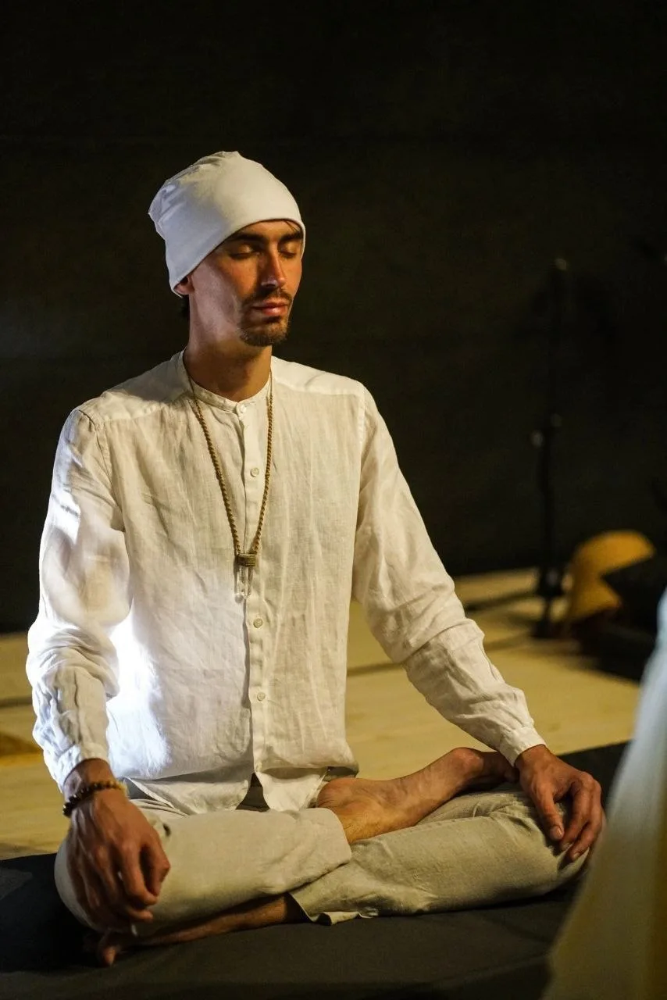
Приглашённый мастер
Проводник Три йоги, пранаямы и гонг-медитации. 25 лет практики.
Ведёт вечернюю Три йогу, пранаяму и проводит гонг-медитацию — звуковую практику глубокого расслабления. Сочетает телесную, дыхательную и медитативную работу, подбирая нагрузку под особенности тела и состояние каждой участницы. Акцент — на верном и безопасном выполнении, расслаблении и осознанности.
«Представьте, что вы стоите на берегу океана, и на вас накатывают волны звука. Напряжение уходит, оставляя место покою — вы как чистый холст, готовый принять новые краски».
Павитра
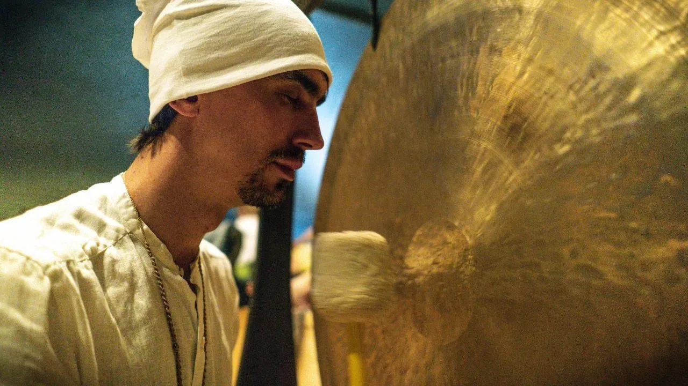
Гонг-медитация
Групповая звуковая практика: участницы лежат, Павитра играет на гонге. Вибрации дают глубокое мышечное и нервное расслабление.
04 · Место
Субтропики Лазаревского района: галечные пляжи, дендрарий, озёра и водопады. Закрытая территория на склоне над морем — три корпуса, бассейн, беседки и террасы, где проходят практики. Спуск к пляжу семь минут пешком. Во всех номерах кондиционер, холодильник и душ, на территории охраняемая парковка.


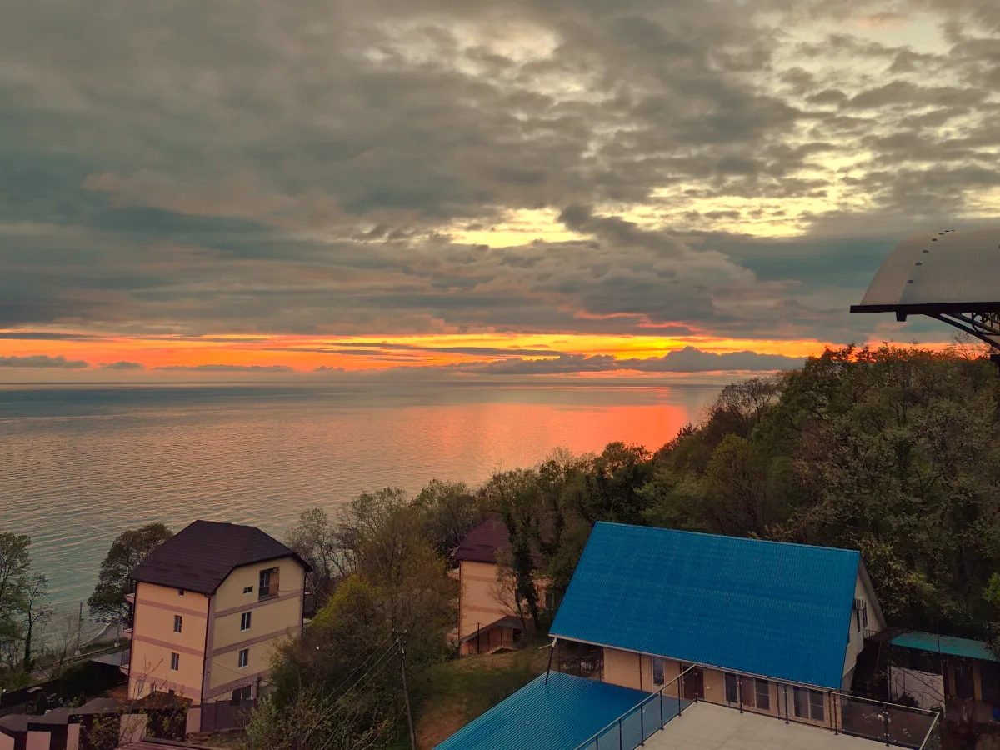
9 октября к 18:00 в отеле. Заселение с 14:00, выезд 12 октября до 12:00.
Из аэропорта — скоростной электричкой до станции Вардане или Лоо, дальше такси. Адрес: ул. Рассветная, 22/14, пос. Вардане.
Коврик, удобную одежду для практики (в том числе тёплую на вечер), купальник, плед или шаль для медитаций.
Кундалини йогу Татьяна изучала не по видео: три уровня Амрит Нам Саровар, ашрам во Франции, одиннадцать лет собственных групп и йога-туров.

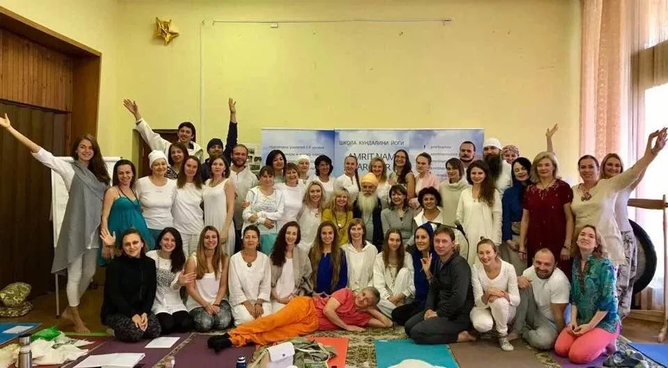

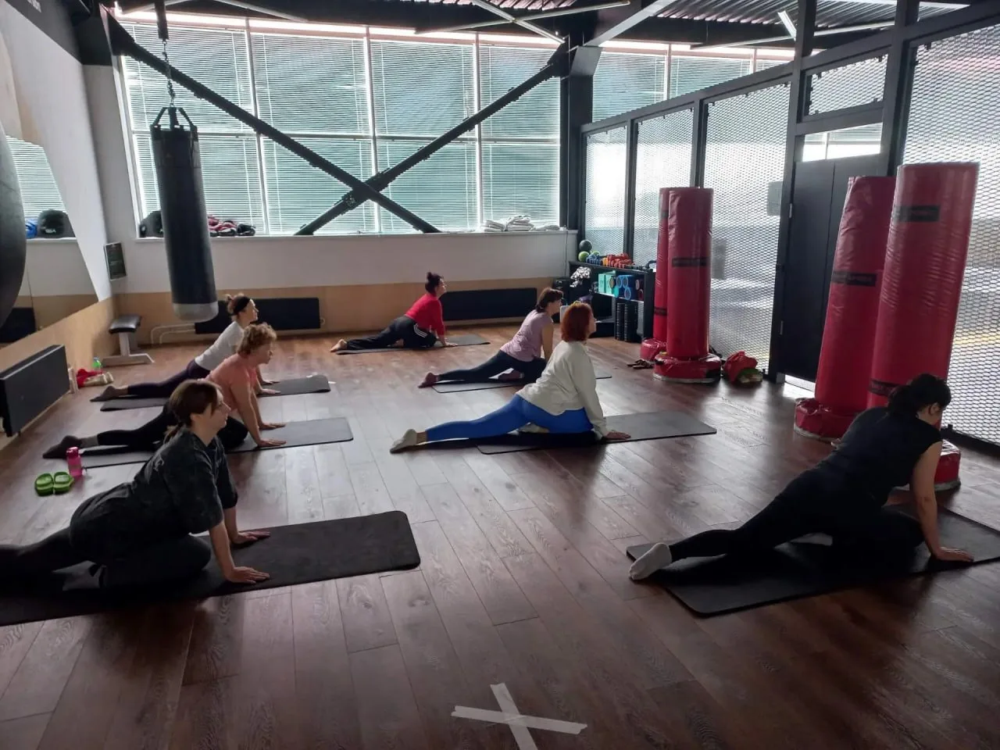
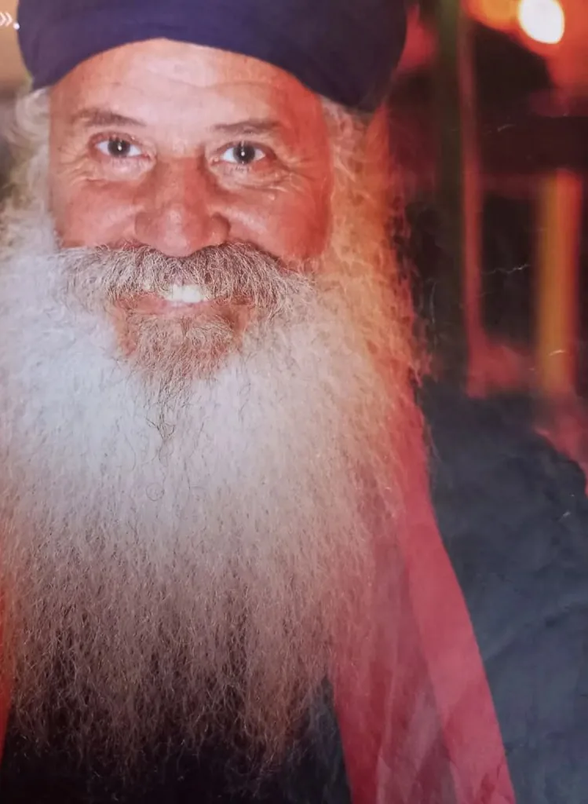
05 · Стоимость
Она не растёт ни от близости дат, ни от того, сколько человек уже записалось. 40 000 ₽ — это всё вместе: комната, питание и все занятия. Бронировать заранее стоит не ради скидки, а чтобы спокойно выбрать соседку и без спешки взять билеты.
40 000 ₽с человека, всё включено
Предоплата 7 000 ₽ бронирует номер на ваши даты. Остаток за проживание — по приезду, картой в отеле; занятия — наличными на месте.
Забронировать местоДа. Все практики осваиваются с нуля, нагрузка подбирается под состояние. Главное — желание.
У части практик они есть: острые состояния сердца и сосудов, недавние операции, беременность — обсуждается индивидуально. Напишите Татьяне до брони, если сомневаетесь: она подберёт щадящий вариант или честно скажет, что сейчас не время.
Большинство участниц так и приезжает. Размещение двухместное — соседку подберём по возрасту и режиму. Нужен отдельный номер — скажите в заявке, посмотрим, что есть свободного.
Условия возврата и переноса предоплаты обсуждаются индивидуально. Зафиксируйте договорённости письменно — в переписке с Татьяной — до того, как переводить деньги.
Это телесные и дыхательные практики с понятной механикой. Духовная часть — медитации и беседы — есть, но участие в каждой практике добровольное.
Да: с обеда до пяти вечера свободно каждый день. Октябрь в Вардане — бархатный сезон, вода ещё тёплая.
06 · Заявка
Это ещё не оплата. Оставьте имя и контакт — Татьяна свяжется, ответит на вопросы и расскажет, как внести предоплату.
Ведущая ретрита. Бронирование мест — лично.
Отвечаю в течение дня. Если вопрос срочный — звоните.
+7 906 976-53-53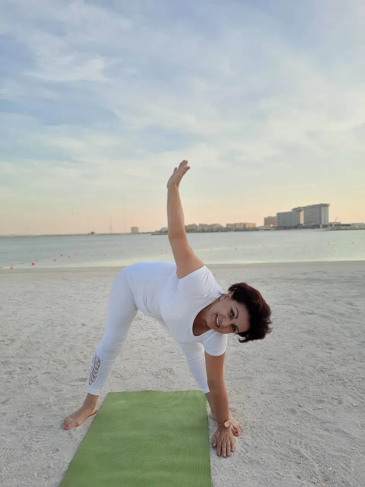
Октябрь в Вардане — бархатный сезон: тёплое море, дендрарий, озёра и водопады рядом.